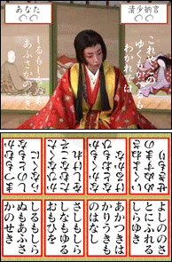
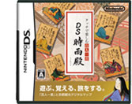
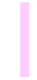
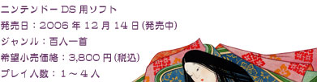
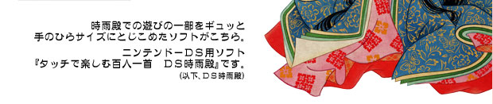
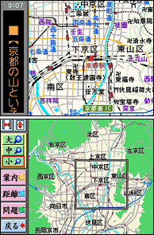

まずメニュー画面で目に付くのが「かるた五番勝負」。時雨殿の「体感かるた五番勝負」に登場した歌人たちとのかるた取りが、ＤＳ時雨殿でも楽しめます。難易度も3段階用意されているので、時雨殿で勝てなかった方はリベンジマッチに、逆に楽勝だった方はより強い相手へ挑戦することができます。このほかＤＳを持ち寄って家族や友人と手軽にかるた取りが楽しめたり、自動朗詠機能付きなので実際の百人一首の札を使った本格的なかるた取りも楽しめます。
和歌を知らないので百人一首には抵抗感がある、という方にもＤＳ時雨殿はオススメです。語呂合わせとイラストを使って暗記練習をするモードがあり、続けていけばかるた取りに強くなることができます。また記憶力や判断力など、かるた取りに役立つな５つのわざを鍛えることもできます。百人一首のかるた取りに強くなった後に時雨殿を訪れると、また違った趣があるかもしれませんね。
 |
 |
|  | |
ＤＳ時雨殿のもうひとつの特徴が、デジタルマップの機能です。京都市を中心にした京都の地図が収録されていて、「清水寺」や「二条城」、「金閣寺」、「平安神宮」など有名な観光名所の位置を知ることができます。操作はタッチペン１本でカンタン。下画面をタッチしたりスライドしたりすることで、見たい地域をスムーズに表示させることができ、縮尺も3段階に調節することができます。ＤＳの携帯性もあいまって京都観光のお供にぴったりのソフトです。 デジタルマップならではの機能としては、どこにどんな観光名所があるのか調べることができる、便利な検索機能があります。約400箇所のスポットを色々な条件で探すことができ、例えば四季折々の祭りやイベント名から探す、表示中の地図周辺の名所を探す、歴史上の人物のゆかりの地を探すなど、目的に合わせた多様な探し方ができます。選んだ名所へは「ちどり」と呼ばれるキャラクターが案内をし、その場所と簡単な説明を見ることができます。 |
 ほかにも目的地までの経路の距離を計測する機能も搭載。タッチペンで地図上に線を引くだけで、引いた経路の距離やその経路を通って移動した場合にかかる時間、さらにはその場所まで歩いたり小走りした場合にどれだけカロリーを消費するかなんかもわかります。 ほかにも目的地までの経路の距離を計測する機能も搭載。タッチペンで地図上に線を引くだけで、引いた経路の距離やその経路を通って移動した場合にかかる時間、さらにはその場所まで歩いたり小走りした場合にどれだけカロリーを消費するかなんかもわかります。京都は初めてで地理がよくわからない方や、最近少し運動不足が気になる方、ＤＳ時雨殿とニンテンドーＤＳを片手に京都観光はいかがでしょうか？ちょうど桜の季節ですので、京都各所の華やかな景色が見れると思いますよ。 |